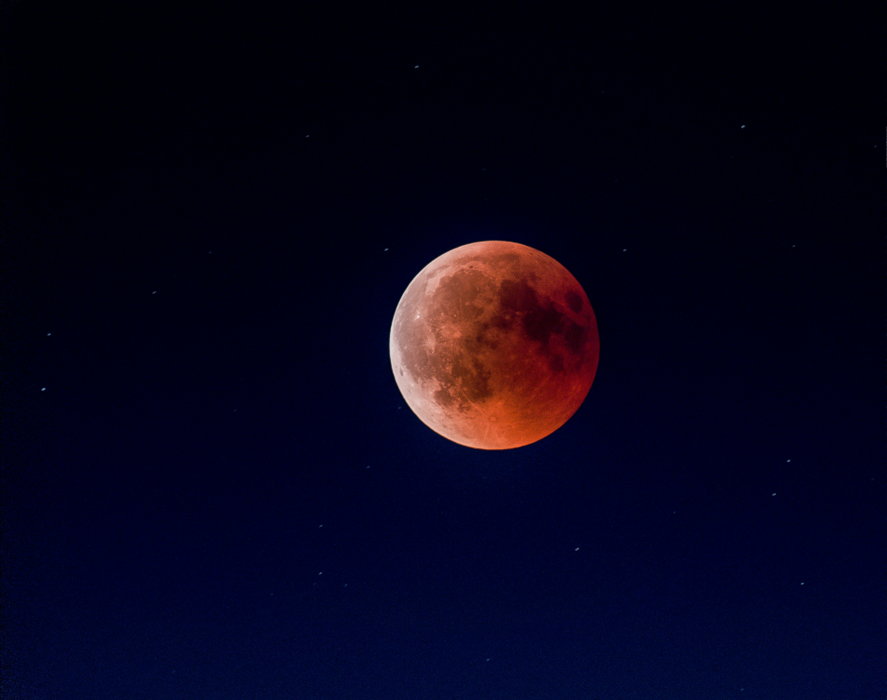
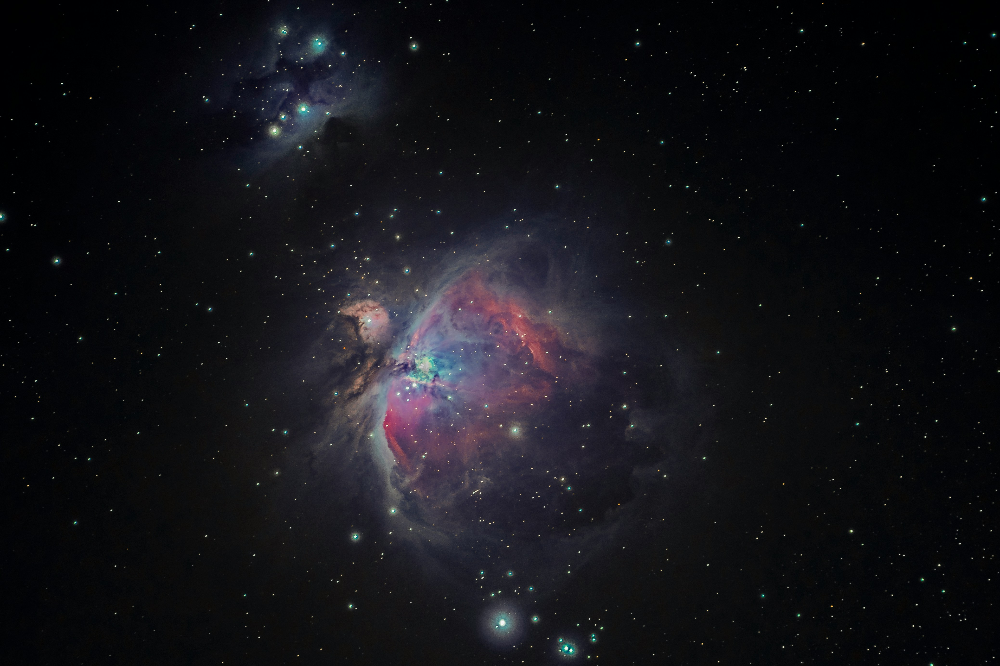
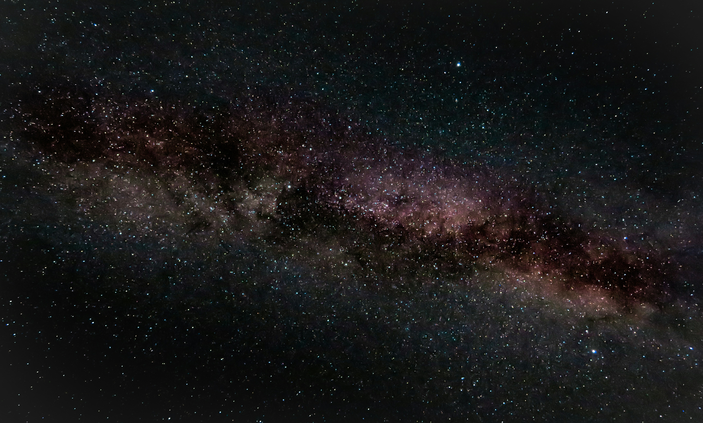

A Astronomia é uma das áreas de conhecimento mais antigas da humanidade, sendo considerada uma ciência natural que tem como objeto de estudo os corpos celestes,

O salário médio de um Astrônomo no Brasil é de R$ 3.538,72. Os estados onde a profissão de Astrônomo têm os melhores salários são Piauí, Tocantins e Distrito Federal.




Como é o curso de Astronomia? O curso de Astronomia tem duração média de quatro anos e combina atividades práticas, aulas teóricas, em laboratórios e observatórios, além do desenvolvimento de projetos acadêmicos.